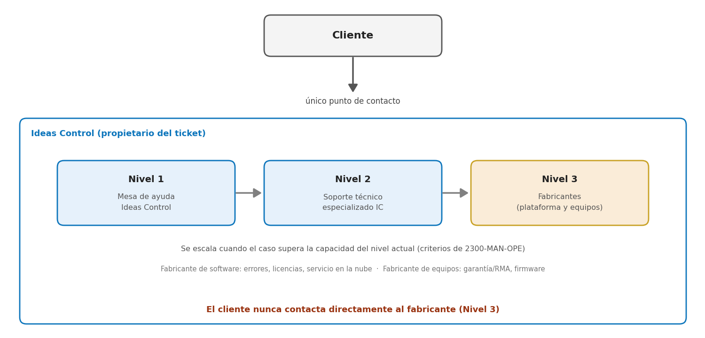

Contenido del documento
- Ficha de Control del Documento
- Control de Cambios
- 1. 1. Propósito
- 2. 2. Alcance
- 3. 3. Modelo de Atención
- 4. 4. Definiciones
- 5. 5. Canales Oficiales de Soporte
- 6. 6. Clasificación de Tickets
- 7. 7. Priorización
- 7.1. Ejemplos de clasificación de tickets
- 8. 8. Acuerdos de Nivel de Servicio (SLA)
- 8.1. Consideraciones
- 9. 9. Niveles de Soporte
- 9.1. Nivel 1 – Mesa de ayuda Ideas Control
- 9.2. Nivel 2 – Soporte técnico Ideas Control
- 9.3. Nivel 3 – Fabricantes (plataforma y equipos)
- 10. 10. Proceso de Atención de Tickets
- 11. 11. Escalación a Nivel 3 (Fabricantes)
- 11.1. Criterios
- 11.2. Responsabilidades de Ideas Control
- 11.3. Información mínima para escalación
- 12. 12. Gestión de Comunicaciones
- 13. 13. Responsabilidades del Cliente
- 14. 14. Responsabilidades de Ideas Control
- 15. 15. Seguridad de la Información
- 16. 16. Atención Remota y En Sitio
- 16.1. Remota
- 16.2. En sitio
- 17. 17. Gestión de Cambios
- 18. 18. Estados del Ticket y Criterios de Cierre
- 18.1. Política de espera del cliente
- 18.2. Razones de cierre
- 19. 19. Indicadores de Gestión
- 20. 20. Gestión de Problemas y Mejora Continua
- 21. 21. Matriz RACI
- 22. 22. Casos Especiales
- 22.1. Caída masiva
- 22.2. Integraciones con nómina
- 22.3. Equipos fuera de garantía
- 22.4. Equipos en garantía
- 23. 23. Documentos del Proceso
Biometría + Plataforma de Tiempos y Asistencia
Ficha de Control del Documento
| Campo | Valor |
|---|---|
| Código del documento | 2300-MAN-OPE |
| Título | Manual de Soporte Técnico |
| Área responsable | Operaciones Técnicas |
| Proceso relacionado | Gestión de incidentes y solicitudes, estados y cierre del ticket, escalamiento, niveles de soporte, indicadores y RACI |
| Elaborado por | Martin Molina / Ingeniero |
| Revisado por | Andrés Bernal / Líder Técnico |
| Aprobado por | Patricia Ramírez / Gerente General |
| Fecha de elaboración | Enero 2025 |
| Versión vigente | 2.0 |
| Próxima revisión programada | Anual, o antes ante cambio relevante en el modelo de servicio, contratos o plataforma |
| Nivel de confidencialidad | Uso interno Ideas Control / Distribución autorizada a clientes bajo contrato de soporte |
Control de Cambios
| Versión | Fecha | Descripción del cambio |
|---|---|---|
| 1.0 | Enero 2025 | Emisión inicial. |
| 1.0 | Agosto 2026 | Revisión sin novedad |
| 2.0 | Octubre 2026 | Consolidación de la serie 2300: alcance integral (equipos y plataforma); estados del ticket y políticas de espera y cierre (antes «Definiciones y Políticas Sistema de Ticketes»); Nivel 3 incluye al fabricante de equipos (garantía/RMA); los tiempos de servicio quedan solo en 2302-ACU-OPE; flujo de 8 pasos (diagrama 2307-DIA-OPE); se retira 2307-REG-OPE; ajustes a RACI e indicadores; se eliminan tablas y títulos duplicados. |
011. Propósito
Establecer las políticas, procesos, niveles de servicio y responsabilidades para la atención de incidentes, requerimientos y solicitudes relacionadas con los dispositivos biométricos suministrados por Ideas Control y la plataforma de tiempos y asistencia provista por un tercero, garantizando una experiencia uniforme, trazable y orientada al cliente bajo las buenas prácticas de ITIL 4.
022. Alcance
Este documento aplica a:
- Clientes activos de Ideas Control con contrato de soporte vigente.
- Dispositivos biométricos comercializados e instalados por Ideas Control.
- Integraciones estándar entre biometría y plataforma de tiempos y asistencia.
- Plataforma de tiempos y asistencia del fabricante aliado, administrada comercialmente por Ideas Control.
- Gestión de garantías, reparaciones y reemplazos (RMA) con el fabricante de los equipos suministrados por Ideas Control.
Exclusiones
- Redes LAN/WAN del cliente.
- Servidores, bases de datos o infraestructura no administrada por Ideas Control.
- Sistemas de nómina del cliente.
- Desarrollos personalizados no contratados.
- Equipos biométricos adquiridos a terceros sin cobertura contractual.
033. Modelo de Atención
Ideas Control opera bajo un modelo de Punto Único de Contacto (Single Point of Contact – SPOC).
Principios
- 01Todo incidente se registra inicialmente en Ideas Control.
- 02Ideas Control conserva la propiedad del ticket durante todo el ciclo de vida.
- 03El cliente no necesita contactar directamente al fabricante.
- 04Las escalaciones al fabricante son transparentes para el cliente.
- 05Ideas Control realiza seguimiento hasta el cierre definitivo.
044. Definiciones
| Término | Definición |
|---|---|
| Incidente | Interrupción no planificada o degradación de un servicio. |
| Solicitud de servicio | Petición estándar del usuario (creación de usuario, capacitación, cambio de horario, etc.). |
| Problema | Causa raíz de uno o más incidentes. |
| Escalación | Transferencia controlada del caso a un nivel técnico superior. |
| Ticket | Registro único de atención con trazabilidad completa. |
| Impacto | Medida del alcance de la afectación que un incidente genera sobre la operación del cliente, considerando los usuarios, equipos, sedes o servicios afectados. |
| Urgencia | Medida de la rapidez con la que debe atenderse un incidente, considerando el riesgo de que la afectación aumente o genere consecuencias para la operación del cliente. |
| Prioridad | Nivel asignado a un ticket a partir de la combinación de su impacto y urgencia, que determina el orden de atención y el SLA aplicable. |
| Estado del ticket | Situación del ticket en Ticket IDC: Abierto, En Progreso, Esperando Cliente, En Espera Interna, Resuelto, Cerrado o Cancelado (sección 18). |
| Razón de cierre | Motivo registrado al cerrar o cancelar un ticket. Permite medir, por ejemplo, el porcentaje de cierres por falta de respuesta del cliente. |
055. Canales Oficiales de Soporte
- Mesa de ayuda / portal de tickets.
- Correo electrónico de soporte.
- Línea telefónica de soporte.
- WhatsApp empresarial (recepción inicial).
Horario de atención estándar
- Lunes a viernes: 8:00 a.m. – 5:00 p.m.
Soporte fuera de horario
Disponible únicamente para incidentes críticos bajo contrato que contemple cobertura extendida.
Plataforma Ticket IDC
Adicional a los canales anteriores, Ideas Control gestiona el ciclo de vida de los tickets a través de su plataforma propia,
Ticket IDC / https://mesadeayuda.timevisionbi.com/#reportar-caso, donde cada caso queda registrado con número de
ticket, prioridad, historial de seguimiento y trazabilidad completa, conforme a la clasificación y priorización definidas en las secciones 6 y 7 de este manual.
- 01Los clientes pueden radicar un caso directamente desde el formulario público de la plataforma, sin necesidad de registrarse; el sistema genera el ticket y notifica automáticamente al equipo de soporte.
- 01Agentes de soporte: gestionan, priorizan, actualizan el estado y dan seguimiento a los tickets y tareas que tienen asignados.
- 01Administradores: tienen visibilidad y control total sobre todos los tickets, tareas y proyectos registrados en la plataforma.
066. Clasificación de Tickets
| Tipo | Descripción | Ejemplos |
|---|---|---|
| Incidente | Falla o degradación | No marca huella, sistema caído |
| Solicitud | Requerimiento operativo | Crear empleado, configurar turno |
| Consulta | Orientación funcional | Cómo generar reporte |
| Cambio | Modificación controlada | Cambiar política de marcación |
| Problema | Análisis de causa raíz | Fallas recurrentes |
077. Priorización
La prioridad se determina por Impacto × Urgencia, conforme a la siguiente matriz:
| Impacto \ Urgencia | Urgencia alta | Urgencia media | Urgencia baja |
|---|---|---|---|
| Impacto alto | Crítica | Alta | Media |
| Impacto medio | Alta | Media | Baja |
| Impacto bajo | Media | Baja | Baja |
Impacto: medida del alcance de la afectación que un incidente genera sobre la operación del cliente. Para determinarlo se considera la cantidad de usuarios, equipos, sedes o servicios afectados y si la afectación es generalizada o parcial.
Urgencia: medida de la rapidez con la que debe atenderse un incidente, considerando el riesgo de que la afectación aumente o genere consecuencias para la operación del cliente.
La prioridad se obtiene combinando impacto y urgencia. El impacto determina el alcance de la afectación; la urgencia determina la rapidez requerida para atenderla.
Ejemplos para determinar el Impacto
Los siguientes ejemplos son orientativos. La clasificación debe considerar la situación concreta del cliente y el alcance real de la afectación.
| Nivel | Ejemplo | Criterio |
|---|---|---|
| Alto | Los biométricos de una sede completa no permiten registrar marcaciones. | Afecta de manera generalizada a la operación de una sede y a un grupo significativo de usuarios. |
| Medio | Un biométrico presenta falla, pero existe otro dispositivo operativo que permite continuar las marcaciones. | La afectación está limitada a un equipo y existe una alternativa temporal. |
| Bajo | Un solo empleado no puede identificarse mediante el método biométrico configurado. | La afectación está limitada a un usuario y no compromete de forma significativa la operación general. |
Ejemplos para determinar la Urgencia
La urgencia debe evaluarse independientemente del impacto. Considera el tiempo disponible para actuar y el riesgo de que la situación genere consecuencias adicionales.
| Nivel | Ejemplo | Criterio |
|---|---|---|
| Alta | El incidente impide registrar la asistencia antes del inicio de un turno crítico o del cierre de un proceso operativo que depende de las marcaciones. | La demora puede generar una afectación inmediata o aumentar las consecuencias del incidente. |
| Media | Existe una falla que afecta la operación, pero el cliente dispone de un procedimiento manual temporal para continuar mientras se atiende el caso. | La situación requiere atención prioritaria, pero existe una alternativa que reduce el riesgo inmediato. |
| Baja | El cliente solicita corregir una configuración o realizar una mejora que no afecta la operación actual y puede programarse. | La atención puede realizarse dentro de la operación normal sin riesgo significativo. |
Regla práctica
Impacto responde a «¿a cuántos y qué parte de la operación afecta?». Urgencia responde a «¿qué tan rápido debemos actuar para evitar o reducir las consecuencias?». La combinación de ambos determina la prioridad del ticket.
7.1Ejemplos de clasificación de tickets
Los siguientes casos ilustran la aplicación conjunta de Impacto y Urgencia. Son ejemplos operativos y no sustituyen el análisis del caso concreto.
| Caso | Impacto | Urgencia | Prioridad | Justificación |
|---|---|---|---|---|
| Todos los biométricos de una sede están fuera de servicio. | Alto | Alta | Crítica | Afectación generalizada y necesidad de actuar de inmediato. |
| Un biométrico falla, pero existe otro dispositivo operativo en la misma sede. | Medio | Media | Media | La afectación es parcial y existe una alternativa temporal. |
| Un empleado no puede identificarse con el método biométrico configurado. | Bajo | Alta | Media | Afecta a un usuario, pero requiere atención rápida para evitar impacto inmediato sobre su marcación. |
| La plataforma presenta indisponibilidad general para una sede o grupo significativo de usuarios. | Alto | Alta | Crítica | Afectación amplia sobre la operación y necesidad de atención inmediata. |
| Un reporte estándar presenta un error, pero la operación de marcaciones continúa. | Medio | Media | Media | Afecta una función parcial sin detener la operación principal. |
| Solicitud de cambio de configuración sin afectación operativa. | Bajo | Baja | Baja | Puede programarse sin riesgo significativo para la operación. |
088. Acuerdos de Nivel de Servicio (SLA)
Los tiempos de respuesta, de resolución, de atención de solicitudes y de despacho en sitio se establecen únicamente en el 2302-ACU-OPE — Acuerdo de Nivel de Servicio de Soporte Técnico. Ese documento es la fuente oficial de tiempos para toda la serie 2300; las condiciones pactadas en un contrato particular prevalecen para ese cliente.
8.1Consideraciones
- Los tiempos se cuentan dentro del horario de soporte.
- Casos dependientes del fabricante pueden extenderse; Ideas Control comunicará ETA actualizado.
- Solo el estado Esperando Cliente suspende el SLA. En Espera Interna (dependencia de un fabricante, proveedor u otra área) no lo suspende.
- Meta global de cumplimiento de SLA: 95% o superior, medida por prioridad, conforme a benchmark de industria (ITIL 4 / ITSM).
- El SLA de Nivel 3 (fabricante) cubre únicamente el tiempo de respuesta; el fabricante no garantiza un tiempo de resolución, práctica estándar del mercado que Ideas Control comunica de forma transparente al cliente.
099. Niveles de Soporte
9.1Nivel 1 – Mesa de ayuda Ideas Control
- Recepción y registro.
- Validación básica.
- Resolución de consultas frecuentes.
- Diagnóstico inicial.
- Escalación cuando corresponda.
9.2Nivel 2 – Soporte técnico Ideas Control
- Diagnóstico avanzado.
- Soporte remoto especializado.
- Validación de integraciones.
- Correcciones de configuración.
- Coordinación de visitas técnicas.
9.3Nivel 3 – Fabricantes (plataforma y equipos)
- Fabricante del software: errores de aplicación, bugs del producto y ajustes de código fuente.
- Fabricante del software: licenciamiento e incidentes de su infraestructura o servicios en la nube.
- Fabricante de los equipos: garantía, reparación o reemplazo (RMA) de equipos con defecto confirmado.
- Fabricante de los equipos: firmware y defectos de hardware que requieren su soporte especializado.

1010. Proceso de Atención de Tickets
Todo ticket sigue ocho pasos, los mismos en este manual, en el procedimiento 2303-PRO-OPE y en el diagrama 2307-DIA-OPE:
- 1. Recibir: el caso llega por un canal oficial o por el formulario de Ticket IDC.
- 2. Registrar: se crea el ticket en Ticket IDC con la información mínima (2305-FOR-OPE). Estado: Abierto.
- 3. Clasificar: se define el tipo de ticket (sección 6). Si cumple los criterios de incidente mayor se activa 2304-PRO-OPE.
- 4. Priorizar: impacto × urgencia (sección 7); el SLA aplicable es el de 2302-ACU-OPE.
- 5. Diagnosticar: N1 valida el síntoma y diagnostica, de preferencia en forma remota (2306-FOR-OPE). Estado: En Progreso.
- 6. Resolver o escalar: N1 resuelve o escala a N2; N2 resuelve, programa visita en sitio (sección 16) o escala a N3 (sección 11). Mientras se espera al fabricante el estado es En Espera Interna; si falta información del cliente, Esperando Cliente.
- 7. Validar: se prueba la solución y se informa al cliente. Estado: Resuelto, durante 3 días calendario para observaciones.
- 8. Cerrar: con la confirmación del cliente o sin observaciones en ese plazo, el ticket pasa a Cerrado con su razón de cierre. Luego se envía la encuesta de satisfacción.
El detalle de cada paso está en 2303-PRO-OPE. Los incidentes mayores siguen 2304-PRO-OPE. El diagrama 2307-DIA-OPE muestra el flujo completo con los estados del ticket.
1111. Escalación a Nivel 3 (Fabricantes)
11.1Criterios
- Error reproducible del software o falla de licenciamiento.
- Servicios del fabricante del software no disponibles.
- Defecto confirmado del producto (software o equipo).
- Equipo en garantía con falla de hardware que requiere reparación o reemplazo (RMA).
- Falla o actualización de firmware que solo puede resolver el fabricante del equipo.
- Requerimiento de acceso restringido al fabricante.
11.2Responsabilidades de Ideas Control
- Consolidar evidencias.
- Abrir el caso con el fabricante y registrar su número en el ticket.
- Mantener comunicación con el cliente.
- Gestionar prioridades.
- Documentar acciones, tiempos y ETA; el ticket queda En Espera Interna mientras depende del fabricante.
11.3Información mínima para escalación
- ID del ticket.
- Cliente.
- Versión del software o firmware; modelo y serial del equipo cuando aplique.
- Evidencia (capturas, logs).
- Pasos para reproducir.
- Impacto del negocio.
1212. Gestión de Comunicaciones
Las comunicaciones con el cliente incluirán, como mínimo: estado del caso, acciones realizadas, responsable asignado y próximo paso previsto.
1313. Responsabilidades del Cliente
El cliente deberá:
- Designar contactos autorizados.
- Reportar incidentes por canales oficiales.
- Proporcionar acceso remoto cuando aplique.
- Entregar información solicitada oportunamente.
- Mantener condiciones eléctricas y de red adecuadas.
- No modificar configuraciones críticas sin autorización.
1414. Responsabilidades de Ideas Control
Ideas Control deberá:
- Operar la mesa de ayuda.
- Registrar y gestionar tickets.
- Cumplir los SLA contratados.
- Mantener trazabilidad completa.
- Coordinar escalaciones.
- Informar avances y cierres.
- Proteger la información del cliente.
1515. Seguridad de la Información
- Acceso únicamente por personal autorizado.
- Uso de credenciales individuales.
- Registro de actividades de soporte.
- Confidencialidad de datos biométricos y laborales.
- Cumplimiento de la Ley 1581 de 2012 y normas de protección de datos aplicables.
- Aplicación de la Política de Seguridad y Protección de la Información 4100-POL-TEC.
1616. Atención Remota y En Sitio
16.1Remota
Método preferente para diagnóstico y resolución.
16.2En sitio
Se programa cuando:
- La falla no puede resolverse remotamente.
- Existe daño físico del dispositivo.
- Se requiere reemplazo de hardware.
- El contrato incluye soporte presencial.
Los desplazamientos pueden generar costos adicionales según contrato.
La visita en sitio se ejecuta como mantenimiento correctivo con los formatos de la serie 2400 (orden de servicio 2401-FOR-OPE, checklist 2402-FOR-OPE, informe técnico 2403-FOR-OPE y acta 2408-FOR-OPE), citando el número del ticket. El tiempo objetivo de despacho está en 2302-ACU-OPE.
1717. Gestión de Cambios
Todo cambio que pueda afectar la operación deberá:
- 01Ser solicitado formalmente.
- 02Evaluarse técnicamente.
- 03Aprobarse por el cliente.
- 04Programarse en ventana acordada.
- 05Documentarse antes y después de su ejecución.
1818. Estados del Ticket y Criterios de Cierre
Ticket IDC maneja siete estados. El nivel de soporte (N1, N2, N3) y la atención en sitio se registran como campos del ticket, no como estados.
| Estado | Significado | Regla |
|---|---|---|
| Abierto | Ticket recibido, pendiente de revisión o asignación. | Revisar y asignar dentro del tiempo de respuesta del SLA. El reloj corre. |
| En Progreso | Ideas Control trabaja activamente en la solución. | Registrar actividades y avances. El reloj corre. |
| Esperando Cliente | Se requiere información, evidencia, autorización o una acción del cliente. | Registrar qué se espera. Es el único estado que suspende el SLA. Aplica la política de espera. |
| En Espera Interna | La solución depende de otra área, técnico, proveedor o fabricante. | Registrar motivo, responsable y ETA. El reloj sigue corriendo. |
| Resuelto | La solución fue aplicada e informada al cliente. | Permanece 3 días calendario para observaciones. Si el cliente reporta una observación, el ticket se reabre y vuelve a En Progreso. |
| Cerrado | El ticket no tiene acciones pendientes. | Se cierra con la confirmación del cliente o tras 3 días calendario en Resuelto sin observaciones. Requiere razón de cierre. |
| Cancelado | El ticket no requiere continuar su gestión. | Razón obligatoria: duplicado, error de registro, solicitud retirada o fuera de alcance. |
18.1Política de espera del cliente
- Día 0: se solicita la información o acción y el ticket pasa a Esperando Cliente.
- Día 1: primer recordatorio.
- Día 2: segundo recordatorio, advirtiendo el cierre.
- Día 3: sin respuesta, el ticket pasa a Cerrado con la razón «Falta de respuesta del cliente».
Los días son calendario. Si el cliente responde, el ticket vuelve a En Progreso y el SLA se reanuda.
18.2Razones de cierre
- Solución confirmada por el cliente.
- Solución aplicada sin observaciones en 3 días calendario.
- Falta de respuesta del cliente.
El cierre registra la razón de cierre, la causa, la solución aplicada, los tiempos y las recomendaciones.
1919. Indicadores de Gestión
Ideas Control monitoreará como mínimo los siguientes indicadores, con metas de referencia de la industria (ITIL 4 / ITSM). La fuente de datos son los reportes de Ticket IDC.
| Indicador | Meta de referencia |
|---|---|
| % cumplimiento SLA | ≥ 95 %, medido por prioridad |
| Tiempo promedio de respuesta | Dentro del SLA vigente (2302-ACU-OPE) |
| Tiempo promedio de resolución | Dentro del SLA vigente (2302-ACU-OPE) |
| Resolución en Nivel 1 | ≥ 70 % (tickets resueltos por N1 ÷ tickets cerrados) |
| Tickets reabiertos | % reabiertos durante los 3 días en Resuelto; minimizar |
| Cerrados por falta de respuesta | % de los tickets cerrados; seguimiento de tendencia |
| Tiempo promedio en Esperando Cliente | Seguimiento de tendencia |
| Incidentes por categoría / por cliente | Seguimiento de tendencia |
| Satisfacción del cliente (CSAT) | ≥ 4.5 / 5.0 |
| Escalaciones al fabricante | Seguimiento de tendencia |
| Disponibilidad del servicio | Seguimiento de tendencia |
| Equipos DOA en reemplazos de garantía | ≤ 2 %, referencia de industria |
2020. Gestión de Problemas y Mejora Continua
Los incidentes recurrentes serán analizados mediante gestión de problemas para identificar la causa raíz y definir acciones preventivas, correctivas y lecciones aprendidas.
2121. Matriz RACI
R: Responsable — A: Aprueba — C: Consultado — I: Informado
| Actividad | Cliente | N1 Mesa de ayuda | N2 Soporte técnico IC | N3 Fabricante | Gerencia IC |
|---|---|---|---|---|---|
| Registro del ticket | I | R / A | I | - | I |
| Diagnóstico inicial | C | R / A | I | - | - |
| Escalación a N2 | I | R | A | - | - |
| Escalación a fabricante (N3) | I | I | R / A | C | I |
| Comunicación con el cliente | I | R | C | - | A |
| Cierre del ticket | C | R | A | - | I |
| Encuesta de satisfacción | R | A | - | - | I |
| Gestión de cambios | A | C | R | I | I |
| Indicadores y reportes | I | C | C | - | R / A |
2222. Casos Especiales
22.1Caída masiva
Se activa el procedimiento de gestión de incidentes mayores 2304-PRO-OPE, con comunicación prioritaria y seguimiento intensivo.
22.2Integraciones con nómina
Ideas Control validará la exportación estándar; la carga en el sistema de nómina es responsabilidad del cliente salvo contrato específico.
22.3Equipos fuera de garantía
La atención se limita al diagnóstico; repuestos y reparación se cotizan por separado.
22.4Equipos en garantía
Ideas Control diagnostica, confirma el defecto y gestiona la garantía o el reemplazo (RMA) con el fabricante del equipo. Mientras tanto el ticket queda En Espera Interna con el ETA informado al cliente; cuando es viable se ofrece un equipo de contingencia.
2323. Documentos del Proceso
La serie 2300 queda conformada por los siguientes documentos. El antiguo 2307-REG-OPE (Historial de Tickets) se retira: el historial y los indicadores se obtienen de Ticket IDC.
| Código | Documento | Uso |
|---|---|---|
| 2300-MAN-OPE | Manual de Soporte Técnico | Reglas del proceso: modelo, niveles, estados, cierre, indicadores y RACI. |
| 2301-CAT-OPE | Catálogo de Servicios de Soporte Técnico | Servicios, cobertura y exclusiones. |
| 2302-ACU-OPE | Acuerdo de Nivel de Servicio de Soporte Técnico | Única fuente de tiempos de servicio. |
| 2303-PRO-OPE | Atención de Tickets de Soporte Técnico | Ejecución de los 8 pasos. |
| 2304-PRO-OPE | Gestión de Incidentes Mayores | Caídas masivas y afectaciones amplias. |
| 2305-FOR-OPE | Registro de Ticket de Soporte Técnico | Campos del ticket en Ticket IDC y formato de respaldo. |
| 2306-FOR-OPE | Checklist de Información para Soporte Remoto | Información para el diagnóstico remoto. |
| 2307-DIA-OPE | Diagrama del Proceso de Soporte Técnico | Vista gráfica del flujo y los estados. |
| Serie 2400 | Gestión de Mantenimiento de Equipos | Visitas en sitio (mantenimiento correctivo). |
| 4100-POL-TEC | Política de Seguridad y Protección de la Información | Tratamiento de la información del cliente. |